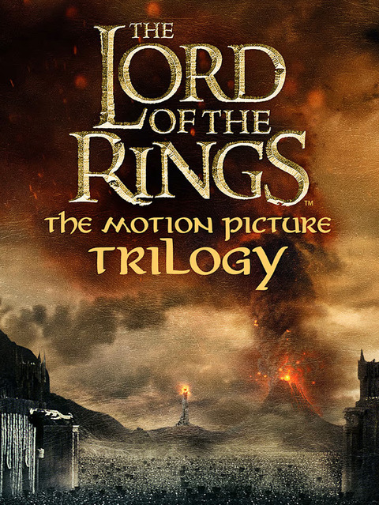

Hey there!
Appreciate you stopping by! Think of this page as the bonus content to my journey—extra details beyond what's on my resume. I originally set out to study Political Science, but life had other plans, and I pivoted straight into the workforce. I spent five years climbing the ranks in sales, followed by four years in technical customer service, sharpening my problem-solving skills. A stint in virtual assistance came next, but after some personal growth (and a little soul-searching), I found my next big adventure—web development. Now, I'm all in, learning, building, and shaping this into my future. So take a look around, or if you're in a hurry, 'Ctrl+F' your way through. Either way, I hope you find something interesting!
My Hobbies
If you just finished reading the last paragraph and made it all the way here, either you have some free time right now or—dare I say—you actually like me. If it's the latter, well, I suppose I have no choice but to indulge you with my oh-so-fascinating hobbies.
When I'm not caught up with coding, you'll usually find me deep into an anime binge, lost in an RPG, scribbling down short stories, or goofing around with my dogs. I'm a sucker for a good movie night—nothing beats curling up on the couch and getting lost in an awesome story. I'm always up for a fun chat about games, movies, or whatever random obsession has taken over my brain at the moment. Life's just more fun when you're geeking out over something cool, right?
My Favorite Films
I see my rambling hasn't bored you just yet. Well, we're down to the last bit of this little supplement to my resume. So, before I wrap this up, let me leave you with something a little different—some of my all-time favorite films. If you haven't watched these movies yet, do yourself a favor—grab a big ol' pint of your favorite ice cream, snuggle up under your softest, coziest fleece blanket, and hit play. Trust me, these films are A+ certified awesomeness. I'm telling you, IT. IS. WORTH. IT. Don't blame me if you end up with a new all-time favorite!
P.S. I only linked The Fellowship of the Ring, but don't worry—The Two Towers and The Return of the King are chilling in the same spot, just waiting for you to hit play. So go on, embark on the full epic journey. Enjoy!

Your Name.
Two strangers find themselves linked in a bizarre way. When a connection forms, will distance be the only thing to keep them apart?
Read More
Just Go With It
On a weekend trip to Hawaii, a plastic surgeon convinces his loyal assistant to pose as his soon-to-be-divorced wife in order to cover up a careless lie he told to his much younger girlfriend.
Read More

The Lord of the Rings Trilogy
A meek Hobbit from the Shire and eight companions set out on a journey to destroy the powerful One Ring and save Middle-earth from the Dark Lord Sauron.
Read More